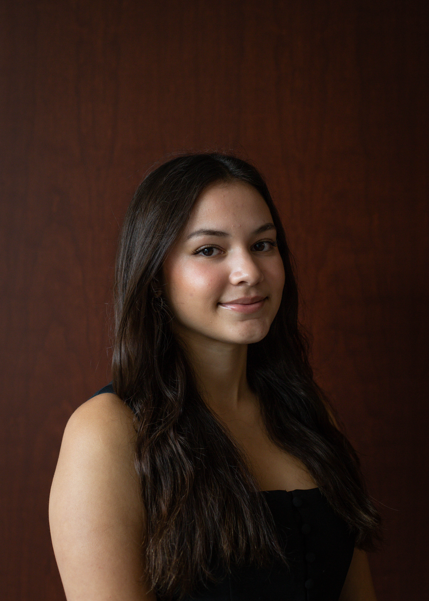

I am a first-generation student who is attending the University of Utah. I am currently majoring in software development and my expected graduation date is May 2028.
My goal as a software engineer is to solve real world problems through development and improve the quality of life. As a student, I have learned how important AI driven development is becoming and I have been able to incorperate it into my projects and products. Recently, I have had practice with developing a Safe Tips app that is meant to efficiently and safely transfer tips to housekeepers. This idea came to me after hearing from a family member how common it is for house keeping tips to be stolen within house keepers.
I currently serve as the Outreach Coordinator for the University of Utah's SHPE chapter (Society of Hispanic Professional Engineers). I also work as a Service Coordinator at the university's Bennion Center, where I plan and host biweekly service projects that support the needs of local nonprofit organizations.
Outside of academics and programming, I enjoy spending time with friends and family and starting different art projects!